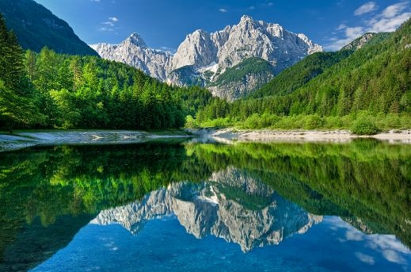

Дендропарк Софіївка
Протягом 200 років "Софіївка" є найбільшою туристичною визначною пам'яткою України.
Національний дендрологічний парк "Софіївка" в Умані без перебільшення є справжнім шедевром світового садово-паркового мистецтва.
Парк широковідомий як в Україні, так і за її межами.
На честь уманського парку навіть називають планети (планета під номером 2259 з 1985 року офіційно носить назву «Софіївка»),
йому присвячують твори (Станіслав Трембецький, поема «Zofiowka»).
Про нього є, що розповісти, і є, що подивитися.
Щорічно побачити це диво паркобудівництва приїжджає близько півмільйона людей на рік.
Загальна площа Софіївського парку в Умані становить 179, 2 га.
Його прикрашають статуї стародавніх богів (Аполлона, Амура, купальниці-Венери), героїв (Паріса, Орфея) і філософів (Сократа, Гомера, Еврипіда, Аристотеля),
мальовничі містки, альтанки, водойми. У «Софіївці» є і Єлисейські поля, і Партерний амфітеатр, і багато іншого.
У парку можна побачити багато чудасій, наприклад, Фонтан Змія - найкрасивіший і оригінальний з усіх софіївський фонтанів.
Він влаштований посеред Нижнього озера. Стовп води заввишки до 20 метрів виривається з широко розкритою пащі гігантської змії. Воістину незабутнє видовище!
"Софіївка" була створена в кінці XVIII століття власником міста Умані, польським магнатом графом Станіславом Потоцьким.
Граф був одружений з константинопольською куртизанкою грецького походження Софією, яку сучасники характеризували як жінку виняткової краси і чарівності.
Граф Потоцький любив балувати красуню-дружину і в якийсь момент вирішив зробити їй романтичний подарунок на іменини.
Так в Умані з'явився казкової краси дендрологічний парк, який був названий на честь дружини графа.
Втілювали задум архітектурного проекту народні майстри-умільці Уманщини – з 1796 по 1802 рр. копали ставки, підземну річку, споруджували водоспади й водограї,
прокладали алеї, переносили велетенські гранітні брили, створювали із граніту та гіпсу художні прикраси для архітектурних споруд.
У парку висаджували дерева місцевих порід та екзотичні рослини, завезені з різних країн світу.
Прикрашали парк мармуровими статуями грецьких богів та богинь, філософів та поетів, виготовленими скульпторами Італії та Франції.
 У парку навіть зберігся дуб, віком біля 400 років, – німий свідок багатьох подій, що відбувалися у цих місцях.
За народними переказами, саме під цим дубом збиралися на наради з козаками легендарні українські ватажки Максим Залізняк та Іван Гонта.
У парку навіть зберігся дуб, віком біля 400 років, – німий свідок багатьох подій, що відбувалися у цих місцях.
За народними переказами, саме під цим дубом збиралися на наради з козаками легендарні українські ватажки Максим Залізняк та Іван Гонта.
Головна композиційна вісь парку проходить по річищу Кам’янки, де споруджено ряд штучних басейнів та ставів: Верхній став (понад 8 га),
Нижній став (близько 1,5 га), водоспади (один з них 14 м висотою), шлюзи, каскади, підземну ріку Ахеронт (завдовжки 224 м),
водограї (найбільший до 20 м) тощо.
Уманський парк «Софіївка» - чудове місце для відпочинку не тільки жителів України, а й іноземців.
Сьогодні це популярний туристичний центр.
Екскурсійне обслуговування в парку здійснюється на декількох мовах (українській, російській, англійській, французькій, німецькій та ін.)
Вам можуть запропонувати покататися по території «Софіївки» в екіпажі або верхи на коні, відправитися в подорож по озеру на човні, гондолі, катамарані або прогулянковому поромі «Софія».
При бажанні можна приміряти вбрання модниць XIX століття і зробити парочку знімків на пам'ять. Особливо люблять це місце наречені. На території парку «Софіївка» передбачено проведення церемонії одруження.
Романтичніше місця навряд чи можна знайти.
Національний парк Триглав
Своїми трьома вершинами Триглав зачаровував древніх слов’ян.
Вони вважали гору будинком триголового бога, який править небом, землею і підземним світом.
Сьогодні це символ Словенії: Триглав зображений на національному прапорі.

Національний парк Триглав – головний туристичний центр Словенії.
Найвища точка парку (і всієї Словенії) – гора Триглав (2864 м) . Найпопулярніший серед туристів центр – Бохинь.
Це найкраще місце для підйому на Триглав через Уканц.
Щорічно Національний парк Триглав відвідує понад 2,5 млн туристів.
Всім хочеться помилуватися величними горами, зеленими долинами, озерами та річками, здійснити пішу або велосипедну прогулянку, зайнятися рафтингом, а взимку – гірські лижі.
На території парку знаходиться 25 поселень з населенням 2200 осіб.
Тут мешкають рідкісні тварини і птахи – бурі ведмеді, рисі і шуліки.
|

Національна самосвідомість вимагає, щоб кожен словенець хоча б раз в житті піднявся на вершину (2864 м) .
Щороку відбувається сходження на гору ста жінок – це покликане підкреслити роль жінок у житті країни. Сходження на Триглав – справа непроста.
Зазвичай передбачається хоча б одна ночівля в гірській хатині.

На самому в'їзді в парк, в оточенні високих гір, знаходиться казково красиве озеро льодовикового походження - Бохинь. Воно прекрасне в будь-яку пору року

Бохіньске озеро лежить в прекрасній частині Юліанських Альп північно-західній Словенії в регіоні Бохинь.
Озеро Бохинь найбільше за площею льодовикове озеро в Словенії.
Озеро льодовиково-тектанічного походження.

Крім прекрасних видів околиць і купанням в кришталево чистій воді озера тут можна зайнятися багатьма водними видами спорту.
Національний парк Йеллоустон
Національний парк Йеллоустон (Єллоустонський національний парк або просто Йеллоустон) – найстаріший і один з найвідоміших національних парків США.
Парк розташований у верхів’ях річки Йеллоустон (від якої він і отримав свою назву) на території трьох штатів – Айдахо,
Вайомінг (велика частина парку) і Монтана. Площа парку – майже дев’ять тисяч кв. км. (це більше, ніж площа штатів Делавер і Род-Айленд).
Єллоустонський національний парк – одна з найпопулярніших визначних пам’яток США, щороку його відвідують більше двох мільйонів туристів.
|